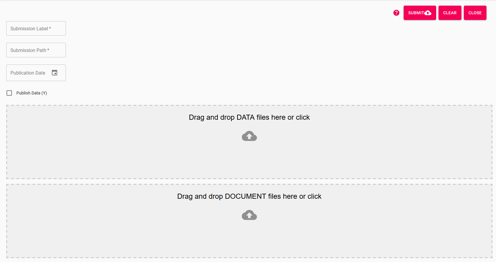

User Manual for the OCDB WebUI
The aim of the Copernicus Ocean Colour Databas (OCDB) is to provide a platform to publish ocean related in-situ measurements. This tool enables researchers to upload their own in-situ data using the the Seabass data format.
The main features of the OCDB database system are the provision of the data to the research community with an enhanced search facility. Further, data that is uploaded by the researchers will automatically validated during the upload process which includes a report on the validation result. The researcher also keeps full control over the submission and publication process.
Search
All data the submitter has agreed to publish is searchable for the public. The OCDB WebUI offers a search interface. Main feature of that interface is the search text field. You can enter a single keyword which will attempt to find data using the meta data fields provided by the submitter. This field also allows to use the so-called Lucene syntax which enables you to search for specific field values and also allows chaining.
Please refer to the search chapter for more details around the Lucene search syntax.
Submissions
In this section we describe how to submit data. We assume that you have a user account and have logged in to the system. When clicking on the submission section a list of your submissions will appear including action buttons.
New Submission
If you want to add a new submission click on New Submission on the top right corner. A new dialog will open. Please add an identifier for your submission and a path where submissions files will be stored under. This will be used to i
When submitting data, you will be asked to provide a publication date. Leave this empty if you do not desire your data to be searchible. Otherwise, indicate what date you would like your data to be available to the public.
If you don't want the data to be published, tick 'publication' allowed. This will be shown in the submission table to the administrators.
Once you initiate the submission by pushing "Submit" your data will be validated using plausibility and validation rules (link to rules).
If the validation succeeds, the status of your submission will be VALIDATED otherwise SUBMITTED. If the system finds errors you can view them in the submission file table by clicking 'list files' on the submission table item.

Submission Actions
List Submission Files:
Views a table of submissions files and enables you to apply actions (see chapter Submission File Actions).
Process Data:
Until now, the data listed in the submission is not visible in the database. The button Process Data will start the processing action. When finished, the data will be visible, burt ONLY to the submitting user and admins.
When pushing this button, the data will be processed into the database and, therefore, available for searching ONLY for administrators and the submittor.
Publish Data:
Publish Data will do exactly the same as Process Data, but will set the status of the data to PUBLISHED and is, therefore, visible and downloadable by the public. The publishing process will check whether the data has been processed already to avoid data duplication.
Delete Submission:
The whole submission will be deleted including processed/published data from the search database.
Halt Restart Submission:
The user is able to halt a submission. This will denote the administrators that the user wished that the is NOT to be processed. Once the process is halted, the user can a Restart button will appear.
Cancel Submission:
Cancelling the submission will delete the database entries linked to this submission.
Submission Statuses
From the above actions the following statuses for submissions derive.
- Submitted
- Validated
- Cancelled
- Processed
- Published
Submission File Actions
When clicking on listing files for a submission the data and document files are listed. This new table provides the following actions:
List Validation Issues:
List issues the system encountered when validating the data file.
Delete File:
Remove the file from the submission.
Download File:
Download the file if a changed to the submission file is required.
Upload File:
Reupload a new version of the file. The old one will be overwritten. The validation will be re-run.
Submission File Statuses
- ERROR
- VALIDATED
- WARNING